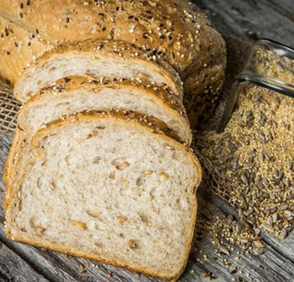

É ideal para fornecer minerais e vitaminas que garantem o bom funcionamento do organismo e atuam na prevenção de doenças, por exemplo. Além de serem ótimas para bom funcionamento do intestino pelo fornecimento de fibras e também ajudarem no processo de limpeza do nosso organismo.
É ideal para fornecer minerais e vitaminas que garantem o bom funcionamento do organismo e atuam na prevenção de doenças, por exemplo. Além de serem ótimas para bom funcionamento do intestino pelo fornecimento de fibras e também ajudarem no processo de limpeza do nosso organismo.
É ideal para fornecer minerais e vitaminas que garantem o bom funcionamento do organismo e atuam na prevenção de doenças, por exemplo. Além de serem ótimas para bom funcionamento do intestino pelo fornecimento de fibras e também ajudarem no processo de limpeza do nosso organismo.
O ovo possui nutrientes com ação antioxidante como os carotenoides, a vitamina A e E, ácido fólico, zinco, magnésio e selênio. Estes componentes ajudam a proteger as células da ação danosa dos radicais livres, o que auxilia a retardar o envelhecimento celular precoce.
O abacate ajuda a regular os níveis de colesterol ruim (LDL), prevenindo doenças cardiovasculares, isso ocorre devido a um componente da fruta chamado beta-sitosterol, um fitoesterol (gordura monoinsaturada) que também atua no controle do cortisol.